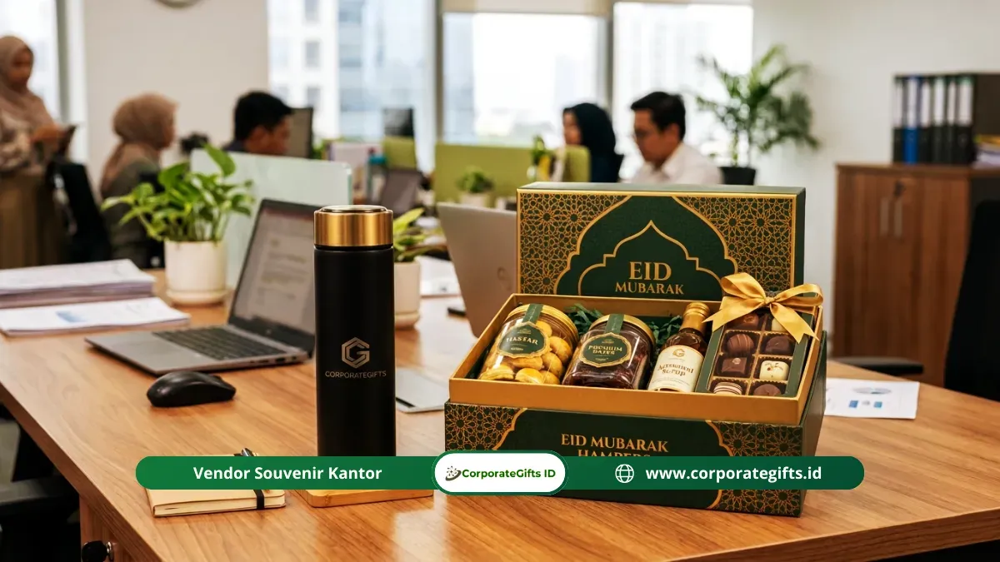

Corporate Gifts ID - Perbedaan utama antara souvenir halalbihalal dan hampers lebaran kantor terletak pada tiga aspek krusial: waktu pembagian, skala segmentasi penerima, serta alokasi anggaran perusahaan. Hampers lebaran dibagikan sebelum libur cuti bersama sebagai bentuk apresiasi tahunan bernilai tinggi, sedangkan souvenir halalbihalal diserahkan saat momentum silaturahmi kantor usai libur hari raya dengan konsep bingkisan yang lebih fungsional dan merata.
Pernahkah Anda menyaksikan tim HRD atau General Affairs kebingungan saat menentukan paket bingkisan menjelang hari raya? Banyak perusahaan terjebak dalam sindrom FOMO (fear of missing out) sehingga membelanjakan anggaran tanpa diferensiasi fungsi yang jelas. Akibatnya, anggaran promosi membengkak tanpa menghasilkan emotional return on investment (ROI) yang optimal.
Poin Kunci Perbedaan Souvenir Halalbihalal vs Hampers:
- Waktu Penyerahan (Timing): Hampers dibagikan H-14 hingga H-7 pra-libur lebaran, sedangkan souvenir halalbihalal dibagikan pada hari-H gathering pasca-cuti bersama (H+7 hingga H+14).
- Fokus Penerima: Hampers ditujukan secara selektif untuk apresiasi keluarga karyawan dan klien VIP, sementara souvenir halalbihalal menganut prinsip kesetaraan bagi seluruh peserta acara.
- Skala Anggaran (Cost Per Unit): Hampers menggunakan pos budget premium per unit, sedangkan souvenir halalbihalal mengedepankan efisiensi skala massal berbasis kebutuhan kerja harian.
- Fungsi Komunikasi: Hampers menghadirkan sentuhan kehangatan domestik keluarga, sedangkan souvenir halalbihalal menjadi pemantik semangat kolaborasi kerja di kuartal baru.
Budaya dan Tradisi Gifting Hari Raya di Lingkungan Korporasi
Dunia kerja profesional di Indonesia memiliki ikatan kultural yang sangat kental dengan nilai kekeluargaan. Momentum hari raya keagamaan bukan sekadar jeda operasional, melainkan jembatan relasional untuk memperkuat tali silaturahmi antara manajemen, staf, dan mitra eksternal.
Pemberian bingkisan korporasi memadukan nilai etis, apresiasi kinerja, dan diplomasi bisnis yang elegan. Namun demikian, hampers lebaran kantor dan souvenir halalbihalal memiliki akar operasional yang sama sekali berbeda:
- Akar Historis Hantaran vs Cinderamata: Hampers berakar dari tradisi hantaran berkah menjelang perayaan besar, sedangkan souvenir lahir dari tradisi pemberian cenderamata fisik atas keterlibatan dalam suatu forum pertemuan (gathering memento).
- Signifikansi bagi Manajemen SDM: Memahami distingsi ini menghindarkan perusahaan dari pemborosan ganda serta memastikan pesan apresiasi tersampaikan tepat pada momentum psikologis terbaik penerima.
Perbedaan Waktu Distribusi dan Momentum Psikologis Penerima
Membagikan bingkisan di luar momentum yang tepat dapat mengurangi dampak emosional hadiah secara drastis. Penjadwalan logistik harus memperhitungkan kesiapan mental penerima:
Distribusi Hampers Lebaran (Pra-Hari Raya)
Waktu paling ideal untuk membagikan hampers lebaran adalah H-14 hingga H-7 sebelum hari pertama cuti bersama dimulai. Pada periode ini, antusiasme menyambut lebaran berada pada puncaknya. Bingkisan berupa kue artisan, sirup premium, atau perlengkapan ibadah dapat langsung dibawa pulang oleh karyawan untuk melengkapi jamuan keluarga besar di kampung halaman.
Distribusi Souvenir Halalbihalal (Pasca-Hari Raya)
Sebaliknya, souvenir halalbihalal dibagikan pada rentang waktu 7 hingga 14 hari kerja setelah aktivitas operasional kantor kembali berjalan normal. Saat seluruh divisi berkumpul di aula atau ballroom untuk saling bermaaf-maafan, suvenir diserahkan di pintu masuk atau di akhir acara sebagai tanda kebersamaan kembali ke ritme kerja produktif.

Estetika kemasan yang tepat: Hampers mengusung rigid hardbox bernuansa hangat, sedangkan souvenir halalbihalal dikemas praktis dan ramah lingkungan untuk penggunaan di meja kerja.
Sifat dan Tujuan Strategis Komunikasi Internal Perusahaan
Setiap instrumen gifting yang disiapkan perusahaan harus memiliki objektif komunikasi yang jelas dan terukur:
- Hampers sebagai Penghargaan Tahunan (Annual Recognition): Bertujuan menyentuh ranah domestik penerima. Ketika keluarga karyawan menikmati kue lezat atau menggunakan perlengkapan rumah tangga dari kantor, terbentuk rasa bangga dan loyalitas emosional yang mendalam terhadap perusahaan.
- Souvenir sebagai Perekat Rekonsiliasi (Team Reconciliation): Berfungsi sebagai simbol penyatuan kembali setelah libur panjang. Bingkisan ini mencairkan sekat-sekat departmental serta membakar semangat kolaborasi antar karyawan untuk menyongsong target kinerja kuartal berikutnya.
Segmentasi Penerima: Selektif vs Kesetaraan Kolektif
Pengelolaan penerima menuntut kepekaan sosial tinggi agar tidak menimbulkan disparitas atau kecemburuan di lingkungan kerja:
- Segmentasi Hampers (Berjenjang & Selektif): Umumnya dibagi ke dalam tiering paket, seperti Paket Platinum untuk direksi dan klien prioritas, Paket Gold untuk manajerial, serta Paket Silver untuk seluruh staf. Pengiriman hampers ke kantor mitra kerja juga menjadi sarana diplomasi korporat B2B yang krusial.
- Souvenir Halalbihalal (Kolektif & Egaliter): Mengedepankan prinsip kesetaraan sosial (egalitarian spirit). Seluruh peserta yang hadir, mulai dari jajaran dewan komisaris, staf tetap, pekerja magang, hingga petugas kebersihan, menerima bingkisan yang seragam tanpa diskriminasi jabatan.
Tabel Perbandingan Lengkap Souvenir Halalbihalal vs Hampers
Untuk memudahkan perencanaan pengadaan tim panitia hari raya dan bagian procurement, berikut komparasi komprehensif antara kedua instrumen hadiah tersebut:
| Aspek Pembeda | Hampers Lebaran Kantor | Souvenir Halalbihalal Kantor |
|---|---|---|
| Waktu Penyerahan | H-14 s/d H-7 sebelum masa cuti bersama lebaran dimulai | Saat hari pelaksanaan acara silaturahmi kantor (H+7 s/d H+14) |
| Skala & Target Penerima | Keluarga karyawan dan mitra bisnis VIP terpilih (berjenjang) | Seluruh peserta acara tanpa memandang jenjang jabatan (egaliter) |
| Fokus Dampak Emosional | Kesejahteraan domestik, rasa syukur, dan kehangatan keluarga | Kebersamaan rekan kerja, semangat baru, dan produktivitas tim |
| Alokasi Anggaran / Unit | Alokasi menengah hingga premium (Rp 250.000 - Rp 1.500.000+) | Alokasi massal efisien (Rp 45.000 - Rp 150.000 per orang) |
| Karakteristik Produk | Kue kering artisan, set cangkir teh, sajadah travel, madu murni | Tumbler stainless custom, notebook agenda, pouch kanvas, mug keramik |
| Estetika Kemasan | Rigid hardbox mewah, keranjang rotan hias pita, kain furoshiki | Totebag spunbond ramah lingkungan, sliding craft box minimalis |
Struktur Anggaran, Skalabilitas Pengadaan, dan Efisiensi RAB
Mengalokasikan anggaran untuk dua agenda besar dalam satu musim perayaan memerlukan kejelian kalkulasi. Berikut rumus efisiensi yang lazim diterapkan oleh konsultan corporate gift profesional:
- Proporsi 70 : 30 untuk Anggaran Seimbang: Alokasikan sekitar 65% hingga 70% dari total anggaran hari raya untuk paket hampers lebaran utama, sedangkan 30% hingga 35% sisanya dikhususkan untuk pengadaan souvenir halalbihalal massal.
- Pemanfaatan Skala Ekonomi (Bulk Order): Menyatukan pengadaan beberapa komponen suvenir ke vendor tunggal yang berpengalaman dapat menghemat biaya produksi hingga 20% dibandingkan memesan secara terpisah dari vendor berbeda.
- Jadwal Pemesanan Minimal H-30: Memesan jauh hari sebelum lonjakan permintaan ramadhan menjamin ketersediaan bahan baku, stabilitas harga tanpa biaya rush fee, serta ketepatan waktu pengiriman kargo.
Karakteristik Pilihan Produk dan Estetika Kemasan yang Elegan
Agar bingkisan yang dibagikan tidak sekadar berakhir di tempat sampah atau sudut lemari, perhatikan daya guna fungsional dan keanggunan tampilan fisiknya:
- Produk Fungsional Harian Meja Kerja: Untuk halalbihalal, produk seperti tumbler stainless grafir nama, notes bergaris jilid spiral, atau flashdisk dual-drive sangat disukai karena langsung terpakai di meja kerja hari berikutnya.
- Kemasan Sederhana Namun Sarat Makna: Gunakan packaging berbahan karton daur ulang bertekstur atau kantong belacu dengan aksen pita bernuansa hijau sage atau emas lembut.
- Teknik Subtle Branding yang Berkelas: Hindari mencetak logo perusahaan berukuran raksasa di tengah barang. Pilihlah teknik grafir laser halus, deboss pada kulit sintetis, atau print monokrom di sudut bawah produk agar karyawan bangga membawanya ke ruang publik.
Pertanyaan Seputar Souvenir Halalbihalal & Hampers (FAQ)

Ditulis oleh: Arinda Zakia
Senior Corporate Gifting SpecialistSpesialis strategi hadiah korporat, kurasi paket hampers seasonal, dan souvenir promosi di CorporateGifts.ID. Berpengalaman mendampingi ratusan perusahaan nasional dan instansi pemerintah merancang program apresiasi karyawan yang berkesan.
Lihat Profil Lengkap & Panduan Lainnya